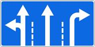
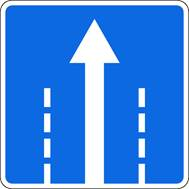
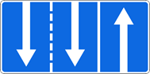
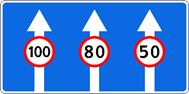
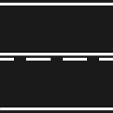
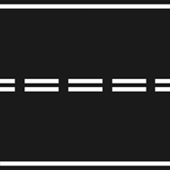
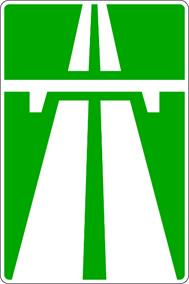
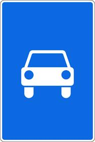

9. Расположение транспортных средств на проезжей части
изменения от 8 апреля 2020
9.1. Количество полос движения для безрельсовых транспортных средств определяется разметкой и (или) знаками 5.15.1 , 5.15.2 , 5.15.7 , 5.15.8 , а если их нет, то самими водителями с учетом ширины проезжей части, габаритов транспортных средств и необходимых интервалов между ними. При этом стороной, предназначенной для встречного движения на дорогах с двусторонним движением без разделительной полосы, считается половина ширины проезжей части, расположенная слева, не считая местных уширений проезжей части (переходно-скоростные полосы, дополнительные полосы на подъем, заездные карманы мест остановок маршрутных транспортных средств).

Знак 5.15.1

Знак 5.15.2

Знак 5.15.7

Знак 5.15.8
9.1(1). На любых дорогах с двусторонним движением запрещается движение по полосе, предназначенной для встречного движения, если она отделена трамвайными путями, разделительной полосой, разметкой 1.1 , 1.3 или разметкой 1.11 , прерывистая линия которой расположена слева.
Разметка 1.1
Разметка 1.3

Разметка 1.11
9.2. На дорогах с двусторонним движением, имеющих четыре или более полосы, запрещается выезжать для обгона или объезда на полосу, предназначенную для встречного движения. На таких дорогах повороты налево или развороты могут выполняться на перекрестках и в других местах, где это не запрещено Правилами, знаками и (или) разметкой.
9.3. На дорогах с двусторонним движением, имеющих три полосы, обозначенные разметкой (за исключением разметки 1.9 ), из которых средняя используется для движения в обоих направлениях, разрешается выезжать на эту полосу только для обгона, объезда, поворота налево или разворота. Выезжать на крайнюю левую полосу, предназначенную для встречного движения, запрещается.

Разметка 1.9
9.4. Вне населенных пунктов, а также в населенных пунктах на дорогах, обозначенных знаком 5.1 или 5.3 или где разрешено движение со скоростью более 80 км/ч, водители транспортных средств должны вести их по возможности ближе к правому краю проезжей части. Запрещается занимать левые полосы движения при свободных правых.

Знак 5.1

Знак 5.3
В населенных пунктах с учетом требований настоящего пункта и пунктов 9.5, 16.1 и 24.2 Правил водители транспортных средств могут использовать наиболее удобную для них полосу движения. При интенсивном движении, когда все полосы движения заняты, менять полосу разрешается только для поворота налево или направо, разворота, остановки или объезда препятствия.
Однако на любых дорогах, имеющих для движения в данном направлении три полосы и более, занимать крайнюю левую полосу разрешается только при интенсивном движении, когда заняты другие полосы, а также для поворота налево или разворота, а грузовым автомобилям с разрешенной максимальной массой более 2,5 т - только для поворота налево или разворота. Выезд на левую полосу дорог с односторонним движением для остановки и стоянки осуществляется в соответствии с пунктом 12.1 Правил.
9.5. Транспортные средства, скорость движения которых не должна превышать 40 км/ч или которые по техническим причинам не могут развивать такую скорость, должны двигаться по крайней правой полосе, кроме случаев объезда, обгона или перестроения перед поворотом налево разворотом или остановкой в разрешенных случаях на левой стороне дороги.
9.6. Разрешается движение по трамвайным путям попутного направления, расположенным слева на одном уровне с проезжей частью, когда заняты все полосы данного направления, а также при объезде, повороте налево или развороте с учетом пункта 8.5 Правил. При этом не должно создаваться помех трамваю. Выезжать на трамвайные пути встречного направления запрещается. Если перед перекрестком установлены дорожные знаки 5.15.1 или 5.15.2 , движение по трамвайным путям через перекресток запрещается.
9.7. Если проезжая часть разделена на полосы линиями разметки, движение транспортных средств должно осуществляться строго по обозначенным полосам. Наезжать на прерывистые линии разметки разрешается лишь при перестроении.
9.8. При повороте на дорогу с реверсивным движением водитель должен вести транспортное средство таким образом, чтобы при выезде с пересечения проезжих частей транспортное средство заняло крайнюю правую полосу. Перестроение разрешается только после того, как водитель убедится, что движение в данном направлении разрешается и по другим полосам.
9.9. Запрещается движение транспортных средств по разделительным полосам и обочинам, тротуарам и пешеходным дорожкам (за исключением случаев, предусмотренных пунктами 12.1, 24.2 - 24.4, 24.7, 25.2 Правил), а также движение механических транспортных средств (кроме мопедов) по полосам для велосипедистов. Запрещается движение механических транспортных средств по велосипедным и велопешеходным дорожкам. Допускается движение машин дорожно-эксплуатационных и коммунальных служб, а также подъезд по кратчайшему пути транспортных средств, подвозящих грузы к торговым и другим предприятиям и объектам, расположенным непосредственно у обочин, тротуаров или пешеходных дорожек, при отсутствии других возможностей подъезда. При этом должна быть обеспечена безопасность движения.
9.10. Водитель должен соблюдать такую дистанцию до движущегося впереди транспортного средства, которая позволила бы избежать столкновения, а также необходимый боковой интервал, обеспечивающий безопасность движения.
9.11. Вне населенных пунктов на дорогах с двусторонним движением, имеющих две полосы, водитель транспортного средства, для которого установлено ограничение скорости, а также водитель транспортного средства (состава транспортных средств) длиной более 7 м должен поддерживать между своим и движущимся впереди транспортным средством такую дистанцию, чтобы обгоняющие его транспортные средства могли без помех перестроиться на ранее занимаемую ими полосу. Это требование не действует при движении по участкам дорог, на которых запрещается обгон, а также при интенсивном движении и движении в организованной транспортной колонне.
9.12. На дорогах с двусторонним движением при отсутствии разделительной полосы островки безопасности, тумбы и элементы дорожных сооружений (опоры мостов, путепроводов и тому подобное), находящиеся на середине проезжей части, водитель должен объезжать справа, если знаки и разметка не предписывают иное.